Literal Strings and Pointers
printf("Hello, world\n");
printf("The value of i is %i\n", i);
printf("The area is %f\n", PI * radius * radius);
Strictly-speaking, it is not a good idea to use NULL for terminating strings. NULL is a macro that is defined as a pointer type. NUL may not be defined, and if it is, it is likely to be an escaped zero: '\0'. However, you will see NULL, NUL, and null being used interchangeably when talking about null-terminated strings. See the comp.lang.c FAQ, specifically section 5.9.
There is a subtle difference between a string and an array of characters. This is how the first literal string above would be laid out in memory: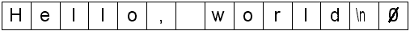
Literal strings are much like character arrays in that they can be used with pointers. In this example, p is a char pointer or pointer to char and it points to the first element in the string:
Visually:char *p = "Hello, world\n";
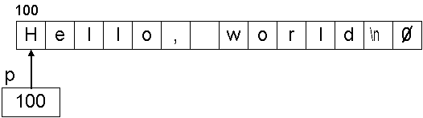We can print the string just as if it was a literal string:
Using the %s format specifier to print strings:printf(p);
char *ph = "Hello";
char *pw = "world";
printf("%s, %s\n", ph, pw);
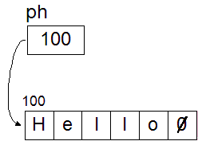 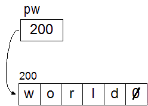 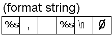The terminating NUL (zero) character is very important when treating the array as a string. It is what tells printf when to stop:
char *ph = "Hello";
char w[] = {'H', 'e', 'l', 'l', 'o'};
printf("%s\n", ph); /* OK, a string */
printf("%s\n", w); /* Bad, not a string */
Another attempt:Hello Hello¦¦¦¦¦¦¦¦¦¦¦<@B
/* Manually add the terminator to the array */
char w[] = {'H', 'e', 'l', 'l', 'o', 0};
/* Ok, now it's a string */
printf("%s\n", w);
char *p = "Hello, world\n";
while (*p != 0)
printf("%c", *p++);
After the while loop:
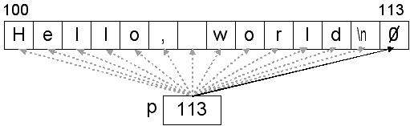
Make sure that you fully understand the difference between the pointer and the value that the pointer is pointing to:
Output from the incorrect code: (using gcc)
char *p = "Hello, world\n"; /* This is the correct condition */ while (*p != 0) printf("%c", *p++);char *p = "Hello, world\n"; /* INCORRECT */ while (p != 0) printf("%c", *p++);
Hello, world
%c Hello world %s, %s
%s
The value of i is %i
?
a @
@ hA x@ l@ xA ¤@ ¬@ ,@ E@ O@ è@ ?A ?A ?A $A 0
A I a`y a¤% a?~?aàS a&+ a,/ aZ1 aN5 a I
Y| 5 __main F?_impure_ptr ·?calloc ï?cygwin_internal ??dll_crt0__FP11per_process e?free K?
malloc >?printf ?realloc O?GetModuleHandleA @ @ @ @ @ @ @ @ @ cygwin1.dll ¶@
KERNEL32.dll
118871 [main] a 1808 _cygtls::handle_exceptions: Exception: STATUS_ACCESS_VIOLATION
118871 [main] a 1808 _cygtls::handle_exceptions: Exception: STATUS_ACCESS_VIOLATION
119867 [main] a 1808 open_stackdumpfile: Dumping stack trace to a.exe.stackdump
119867 [main] a 1808 open_stackdumpfile: Dumping stack trace to a.exe.stackdump
810735 [main] a 1808 _cygtls::handle_exceptions: Exception: STATUS_ACCESS_VIOLATION
841004 [main] a 1808 _cygtls::handle_exceptions: Error while dumping state (probably corrupted stack)
Note: When using printf to print strings, only the first string is being interpreted. For example, this code:
char *p1 = "%s%d";
printf("A string with %%: %s\n", p1);
as none of the other arguments (p1 in this case) will have their % symbols evaluated. They will just be printed verbatim.A string with %: %s%d
String Variables and Initialization
Initialization with character arrays:
char s1[] = {'H', 'e', 'l', 'l', 'o'}; /* array of 5 chars */
char s2[] = {'H', 'e', 'l', 'l', 'o', 0}; /* array of 6 chars */
What is sizeof s1, s2, s3, s4? (Hint: What are the types?)char s3[] = "Hello"; /* array of 6 chars; 5 + terminator */ char *s4 = "Hello"; /* pointer to a char; 6 chars in the "string"; 5 + terminator */
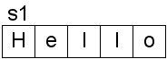 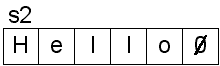 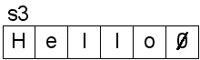Initializing with fewer characters:
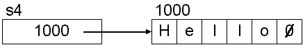
char s5[10] = {'H', 'e', 'l', 'l', 'o'}; /* array of 10 chars, 5 characters are 0 */
char s6[8] = "Hello"; /* array of 8 chars; 3 characters are 0 */
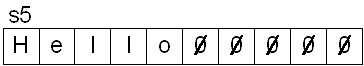 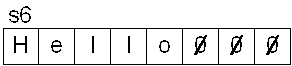Given these declarations:
Use a loop to set each character and then print them out (assume i is an integer):char s[5]; /* array of 5 chars */ char *p; /* pointer to a char */
A different loop doing the same thing (assume c is an integer): ASCII chart
/* Print out the characters: ABCDE */ /* Uses array notation */ for (i = 0; i < 5; i++) printf("%c", s[i]); printf("\n");
Do something similar with p:
/* Print out the characters: ABCDE */ /* Uses pointer notation */ for (i = 0; i < 5; i++) printf("%c", *(s + i));
/* Print out the character that p points to */
printf("%c", p[0]);
printf("%c", *p);
65 [main] a 2020 _cygtls::handle_exceptions: Exception: STATUS_ACCESS_VIOLATION
22906 [main] a 2020 open_stackdumpfile: Dumping stack trace to a.exe.stackdump
65 [main] a 2020 _cygtls::handle_exceptions: Exception: STATUS_ACCESS_VIOLATION
22906 [main] a 2020 open_stackdumpfile: Dumping stack trace to a.exe.stackdump
686199 [main] a 2020 _cygtls::handle_exceptions: Exception: STATUS_ACCESS_VIOLATION
707734 [main] a 2020 _cygtls::handle_exceptions: Error while dumping state (probably corrupted stack)
Now print out the value:/* Point p at s[0] */ p = s;
/* Print out the character that p points to */
printf("%c", p[0]);
printf("%c", *p);
for (i = 0; i < 5; i++) printf("%c", p[i]);for (i = 0; i < 5; i++) printf("%c", *(p + i));
String Input/Output
There's a convenient function for printing strings:The puts function will print a newline automatically. Examples:int puts(const char *string);
There's also a convenient function for printing a single character:
Sample code Output const char *p1 = "Hello"; char p2[] = "Hello"; puts("Hello"); /* literal string */ puts(p1); /* string variable */ puts(p2); /* string variable */ puts("%s%i%d"); /* literal string */
Example:int putchar(int c);
For input, we can use this:
Sample code Output char c = 'H'; char *p = "ello"; putchar(c); /* outputs one char, no newline */ while (*p) putchar(*p++); /* outputs one char, no newline */ putchar('\n'); /* print new line */
int gets(char *string);
Example:
char string[100]; /* 99 chars + NUL terminator */
puts("Type something: "); /* prompt the user */
gets(string); /* read the string */
puts(string); /* print it out */
Type something: I am not a great fool, so I can clearly not choose the wine in front of you. I am not a great fool, so I can clearly not choose the wine in front of you.
Example:int getchar(void);
Notice how the loop only printed part of the phrase that was typed in. The getchar function did not return until the user pressed the enter/return key. Then, the loop continued.
Sample code Output int c = 0; while (c != 'a') { c = getchar(); /* read in a character */ putchar(c); /* print out a character */ }
In C, literal strings are defined as char *. In C++, they are defined as const char *. This will help prevent errors that may occur due to writing to the read-only string pool.
String Functions
Although strings are not truly built into the language, there are many functions specifically for dealing with NUL-terminated strings. You will need to include this:Here are four of the more popular ones:#include <string.h>
| Function Prototype | Description |
| size_t strlen(const char *string); | Returns the length of the string, which is the number of characters int the string. It does not include the terminating 0. |
| char *strcpy(char *destination, const char *source); | Copies the string pointed to by source into the string pointed to by destination. Destination must have enough space to hold the string from source. The return is destination. |
| char *strcat(char *destination, const char *source); | Concatenates (joins) two strings by appending the string in source to the end of the string in destination. Destination must have enough space to accomodate both strings. The return is destination. |
| int strcmp(const char *s1, const char *s2); | Compares two strings lexicographically (i.e. alphabetically). If string1 is less than string2, the return value is negative. If string1 is greater than string2, then the return value is positive. Otherwise the return is 0 (they are the same.) UPPERCASE is considered different than lowercase. |
Sample implementations of strlen:
Most compilers/libraries will have a highly-optimized version of strlen, (and other string-related functions) possibly even written in assembly code, so you should never need to write your own. Here is a version from glibc (The GNU C Library). From my simple tests, it's about 2.5 to 3 times faster than any of the ones shown above. Some of the optimizations may depend on the architecture of the CPU, e.g. SSE (Streaming SIMD Extensions) and vectorization, which is certainly well beyond the scope of this course.
size_t mystrlen1(const char *string) { size_t len; for (len = 0; *string != 0; string++) len++; return len; }size_t mystrlen2(const char *string) { size_t len = 0; while (*string++) len++; return len; }size_t mystrlen3(const char *string) { const char *start = string; /* Leaves string pointing at NUL byte */ while (*string) string++; return string - start; }size_t mystrlen4(const char *string) { const char *start = string; /* Leaves string pointing at one past the NUL byte */ while (*string++) ; return string - start - 1; }
Self check: Using the above implementations of mystrlen as a guide, write your own version of mystrcpy and mystrcat.